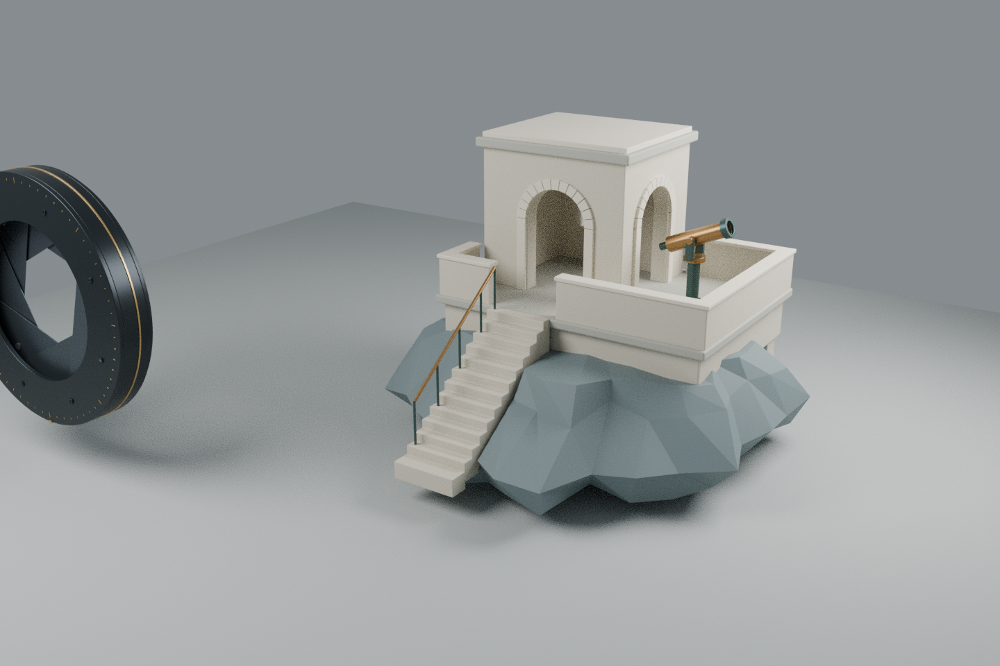
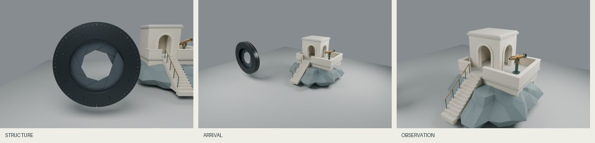

F02 · 观测的尺度：评审与复用
目标与版本
两轮常规模型 003 / 004 后的融合轮。不是给作品贴一个旋转查看器，而是把机械近景、双作品全景、建筑中景做成有状态的三个目的地，对应构造、抵达、观测。原创模型不修改；虹膜固定在既有 27.5° 状态，不模拟真实光学或驱动机构。
2026-11-01 联网对标（原型后）
- NASA Eyes ：官方说明区分太阳系、地球、小行星等任务，并提供分步着陆叙事。实际读取网页文字与图像描述，未运行其三维应用。采用“目的地对应具体问题”；不采用科学准确性话术，本项目没有真实观测数据。
- Apple Vision Pro ：官方页面以具体部件细节和独立段落解释产品。实际读取页面内容、图片替代文字和章节，未验证滚动动画。采用构件→使用场景的尺度组织；不照搬产品外观，不把商业品牌曝光当成审美质量证明。
- Bruno Simon ：作者站提供驾驶探索、键鼠/触摸说明、重置/脱困和质量设置；技术说明提到 Three.js / TSL。实际读取 DOM，未验证 GPU 体验。采用可恢复的状态和显式入口；本作品是安静的空间阅读，不引入游戏驾驶或追逐 WebGPU 升级。
这些是可观察的方法，不是“全球最佳”排名。技术先进、体验可用与个人审美不能互相代替。
首版不足 → 修订
1. 首版全景裁掉部分虹膜，空间关系不完整。统一较宽的垂直视角并将抵达镜头目标左移；保留 arrival-before.png 供比较。
2. Blender 默认水平视角与 Three.js 垂直视角存在不一致。统一 scene.json 中的垂直 48°，Blender 显式 VERTICAL 传感器；重新渲染三个目的地。这样只保证投影约定相同，不保证两渲染器光照逐像素一致。
3. 仅靠场景会让“观测”误解为望远镜光学模拟。补充每章任务、概念边界、普通 DOM 路线图及原模型验证链接。
4. 全屏互动容易夺走阅读控制。实时模式由按钮主动开启；章节链接位于画面之外，普通滚动保留，失败继续离线读图。
尚存不足
- 海岸模型与悬置虹膜是概念并置，不是精细设计的真实场地；虹膜不承担建筑结构。
- 三维模式尚未经过真实 GPU、实体手机、读屏软件和 200% 缩放验收，不能声称正式可用性通过。
- 当前离线环境光偏平，黄铜与灰色背景的层次仍可提升；保持原模型材质，不用过强后期掩盖问题。
- 本轮无新的机械几何生成；复用贡献是可迁移的空间章节契约与导航模块。
复用契约 / spatial-route-v1
适用：2–6 个固定目的地、静态 Y-up 展陈模型、无需碰撞操控的编辑式空间叙事。非适用：第一人称自由漫游、真实光学/工程仿真、巨大地理坐标或随时间拓扑变化的模型。
不变量：路由ID必须与DOM章节及导航链接逐一对应，应用初始化核对不匹配即降级；共享 scene.json；模型源哈希；显式场景 transform；同一垂直 FOV；原生章节锚点；无脚本完整文字；实时失败保留图；普通滚轮不劫持。navigation.mjs 独立于 Three.js，提供配置校验、hash 解析与相机插值，可用于不同模型组合。新模型仍必须重选目的地并做离线构图/净空检查，不能承诺自动获得同样审美。
参数与已测边界：本场景3个目的地、48°垂直视场、0.1近裁面、160远裁面；单次过渡1000ms，减少动态偏好下0ms。契约接受35–60°视场，但仅48°实际渲染；2–6路由是输入限制，不是全集质量证明。909组 CPU 插值样本和8种错误配置拒绝，不能替代浏览器视图验收。
版本：Blender4.3.2、Three.js r180，Cycles CPU48采样、AgX、无降噪；无程序随机扰动。生成脚本和 JSON 必须一起保存。复现：在与 dist 同级的 source/build.py 执行 Blender 后台脚本，再运行 check.py 与 Node test-navigation.mjs。预计成本是三张 CPU 渲染和一次几何检查，实际时长依机器而变。
实际渲染前后
初版镜头与修订后的抵达全景；两图相机不同，比较取景，不比较材质。


三章真实相机视图
